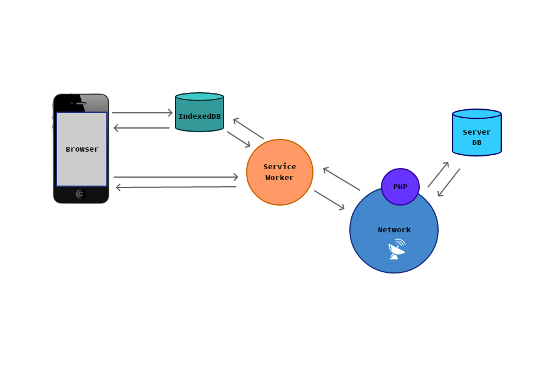
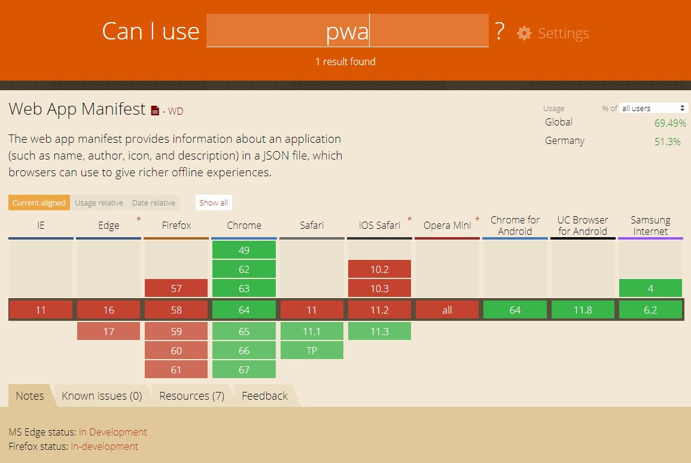
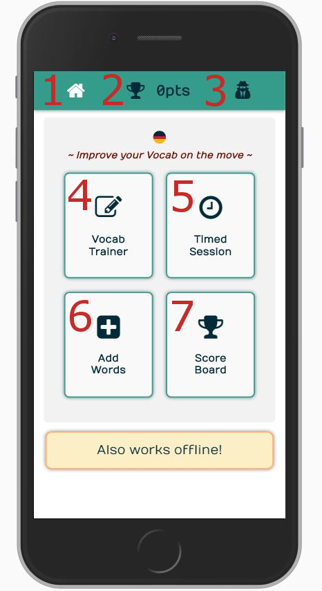
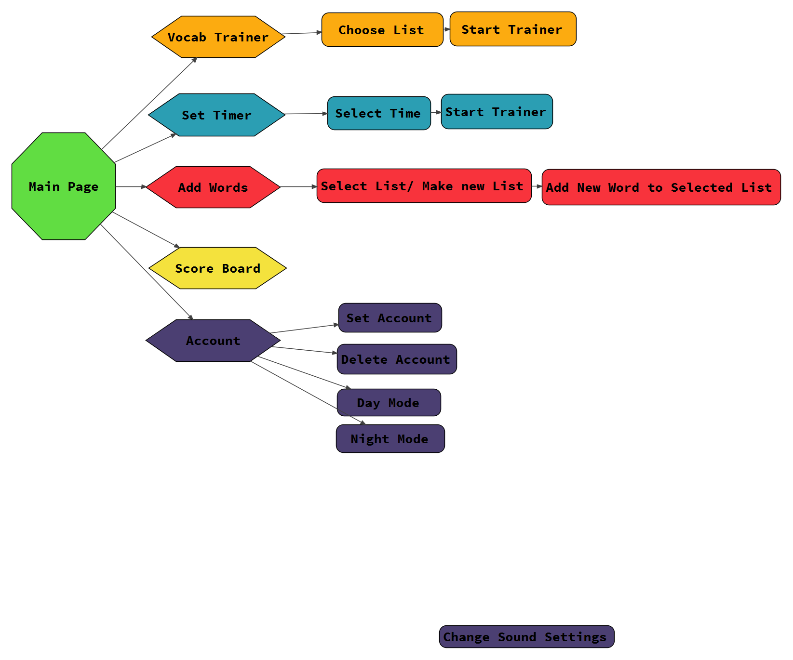
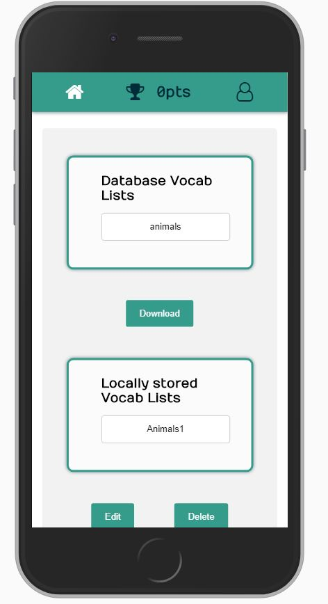
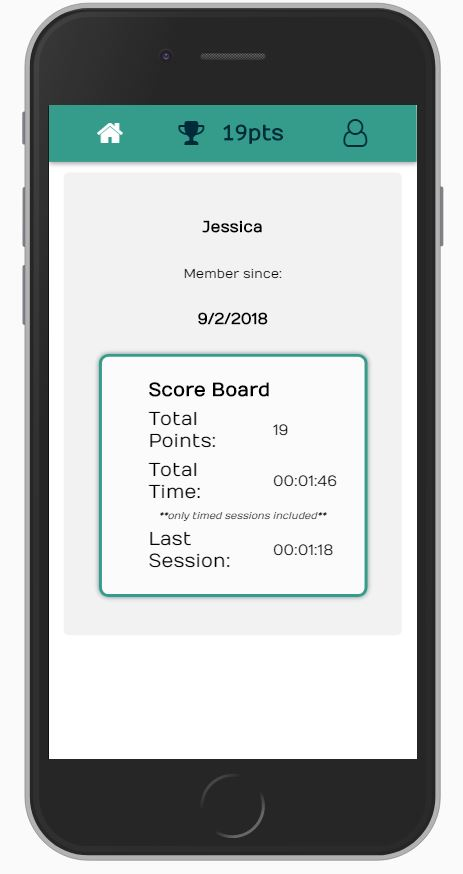

Vocab Trainer
~ Improve your Vocab on the move ~
A offline accessible Progressive Web App for training German vocabulary on your mobile.
User Stories:
-
App for training vocabulary through flash cards where the user types an answer.
-
Offline accessible
-
Progressive Web App Manifest to allow user to add to home screen and view as native app.
-
User can add thier own vocabulary and save these lists to the local storage (IndexedDB).
-
A user account can be saved to track the score count.
-
Vocabulary lists can be downloaded from the main DB and are then editable.
-
Currently user data is not pushed to the main Data base and is only saved locally.
-
A timer is inlcuded for timed sessions and goal setting.
-
Sound FX and styling choices (Night learning mode) can be changed on the account page.
-
When viewed on larger screens the url points to this development page.
Why a Progressive Web App
A new web Experience that works for everyone. Behaves and feels like a native App but is light weight (no large installation files), quick and works offline (/ with lowfi).
-
Boost mobile engagement: on average, 3 times more visitors than native apps.
-
Instantaneously installed directly on your users' home screens, without them having to download anything or go through the stores.
-
Incomparable lightness also eliminates any memory constraints a device may have at the time of installation.
-
Loads quick on first visit.
-
Works offline through a service worker.
-
A mobile-first approach when building your app, with an emphasis on accessibility.


Intuiative layout navigates user quickly
-
1: Home button to return to home page
-
2: Current Score displayed
-
3: Account button to go to accounts page, there an acccount can be added or deleted, also includes settings for sound and style. (Account information is saved in local storage)
-
4: Vocab Trainer (without timer) - goes through to page to select which Vocab to train
-
5: Timer - to set timer and start time sessions these are saved to the users accounts and can be used for daily goals
-
6: Add Vocab - user can add their own vocab, make new vocab lists or download lists from the Server's Database which are then editable. (Local Lists are saved in local storage)
-
7: Score board and stats for current user, if no account prompts user to make an account.
-
8: Simple Scoring System to encourage user in their progress



Data Storage
-
Local Vocab is stored in IndexedDB so it is accessible regardless of connection.
-
The server database has Lists users can either use while online or download for use offline and also be able to edit.
-
If no local lists have been created and there is no connection to the Database then the user is prompt to make a list themselves.
-
Adding words to a list is quick and easy, the app remmebers which list you have last added to and selects that as the option for the next word.
-
**Not Currectly Working*** Lists are editable and words can be deleted, if a word needs changing simply save the new variant over the old version.

Future developments
-
Goal Setting and reminder service (ie 10 mins everyday with notification at 10am to remind user).
-
User Data sent to the Server's database for storage.
-
Logic for not repeating words they guess correctly quickly.
-
Integrated analytics to monitor user interactions.
